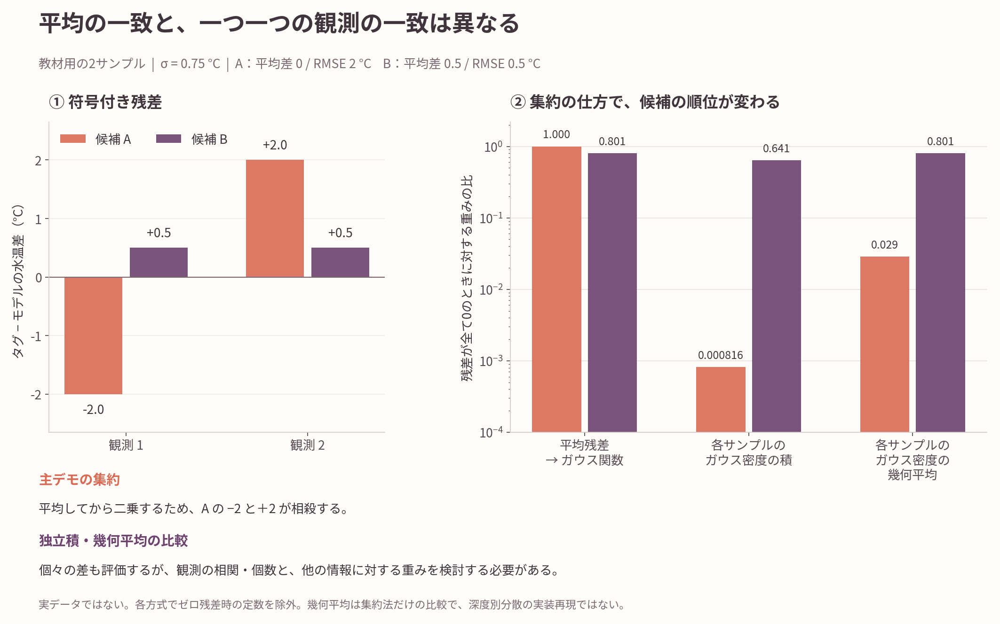

水温・深度履歴から位置の適合度を作る#
水温による位置推定では、タグが記録した値を、候補地点の同じ深さ・対応する時刻の環境場と比べます。同じ水温になる候補は複数あり得るため、水温だけで位置が一つに決まるとは限りません。鉛直方向にも情報があるときは、海面水温だけでなく、魚がいた深度の水温と比べることが重要です。水温・深度の履歴による HMM の先行研究として Woillez ら、別の尤度（likelihood）の作り方として HMMoce があります。[BGT18, WFN+16]
この章では、pangeo-fish（361e9b7、main）の Base／Complete ノートブックに共通する、水温の尤度（likelihood）の作り方を説明します。
1. 主デモの計算を順にたどる#
1.1 時間と深さを対応させる#
海洋モデルの時刻ビン \(t\) に入るタグのサンプルを \(i=1,\ldots,n\) とし、水温を \(T_i\)、正を下向きとした深度を \(z_i\) とします。タグのサンプルは、海洋モデルの時間の区切りに合わせて各時間ビンに割り当てます。そのうえで、候補地点ごとに、タグの深度に最も近いモデルの層を選び、その層の水温とタグの水温の差（残差）を求めます。式で書くと、
\(z_{j,\mathrm{dynamic}}\) は、その時刻の海面から測ったモデル各層の深さです。海面より上にある層（負の値）は、深さ0として扱います。鉛直方向には、補間せず、最も近い層をそのまま使います。
1.2 残差を平均する#
残差は、タグの水温がモデルより高ければ正、低ければ負です（符号付き残差）。タグの深度が欠測でなく、かつ残差が計算できたサンプルについて、残差を平均します。
\(I_t(c)\) は計算に使えたサンプルの集合、\(n_t(c)\) はその個数です。
この平均は正負の符号を保ちます。絶対値や二乗の平均（RMSE：残差の二乗の平均の平方根）ではありません。得られた残差の地図は HEALPix 格子に移し替え（再格子化）、そのあとガウス関数で点数に変えます。
1.3 ガウス関数で位置の重みに変える#
再格子化後の残差を使って、次の式で点数（尤度（likelihood））にします。残差が0に近いほど高い点数になります。
ノートブックで設定する differences_std が \(s_T\) で、残差が許される幅を表します。主デモでは 0.75 °C としています。
differences_std が小さいほど、水温のわずかな違いを強く区別します。大きいほど、点数がなだらかになります。小さくすれば位置の精度が上がるわけではありません。実際の誤差より小さい幅を与えると、正しい候補まで除外してしまうことがあります。
2. 平均してから二乗することの意味#
平均残差の二乗と、個々の残差の二乗の平均は異なります。
この式から、平均残差だけでは、サンプル間の残差のばらつきが評価されないことが分かります。二つの候補セルで比べます。
候補セル |
2サンプルの残差 (°C) |
平均残差 (°C) |
RMSE (°C) |
点数の比 \(\exp[-\bar r^2/(2s_T^2)]\) |
|---|---|---|---|---|
A |
−2, ＋2 |
0 |
2 |
1.000 |
B |
＋0.5, ＋0.5 |
0.5 |
0.5 |
0.801 |
ここでは \(s_T=0.75\) °C としました。A では正負が打ち消し合うので、主デモの式は A に高い重みを与えます。この例は説明のための数値で、実際の魚や海洋モデルのデータではありません。
一方、各サンプルの誤差が独立で同じ幅のガウス分布に従うと仮定して、尤度（likelihood）の積を取れば、
となり、\(s=0.75\) °C の場合の点数の比は A が約0.000816、B が約0.641です。順位が逆になります。平均してから使う方法と、積を取る方法は、同じガウス誤差でも結果が異なります。
ただし、積のほうが正しいという意味ではありません。高頻度で記録した水温には時間的な相関があり、積を取ると、記録の回数が多いだけで点数が極端に鋭くなることがあります。
平均した値の誤差幅は自動では決まらない#
残差が独立で同じ分散 \(s^2\) を持ち、偏りもなければ、平均の分散は \(s^2/n\) になります。ただし、これは仮定した場合の話で、0.75 を \(\sqrt n\) で割ってよい根拠にはなりません。海洋モデルの系統的な誤差や、連続する記録の相関があれば成り立ちません。

図：平均する順序が候補の順位を変えます。 すべて説明用の数値です。右図は、残差がすべて0の場合に対する各方式の点数の比で、縦軸は対数です。幾何平均は、各サンプルの点数の積の n 乗根（掛け算した値を、個数に応じて平均的な大きさに戻したもの）です。
3. 論文の水温尤度（likelihood）との違い#
Woillez et al. (2016) は、浅層・深層の水温の代表値と衛星・MARS（海洋モデル）の水温を比べ、海底地形による条件も組み合わせています。[WFN+16] pangeo-fish の主デモは、利用できるサンプルの残差を平均してからガウス関数に入れる点で、この論文と作り方が異なります。
HMMoce には、海面水温、深度別の水温プロファイル、海洋熱含量など、異なる尤度（likelihood）の作り方が記載されています。[BGT18] 同じ HMM の枠組みでも、手がかりの作り方は研究によって違います。
4. 温度の不一致はセンサー誤差だけではない#
タグとモデルの水温が合わない原因は、センサー誤差だけではありません。次のように整理すると、differences_std を決めるときに役立ちます。
原因 |
確かめること |
|---|---|
タグの測定 |
校正、温度応答時間、ドリフト、欠測、異常値 |
深度の対応 |
水圧から深度への変換、正負の向き、モデル層、海面からの距離と基準面 |
時間の対応 |
UTC、観測間隔、環境モデルが瞬間値か平均値か、time bounds |
環境モデル |
地域・季節ごとの偏り、沿岸域、前線・成層の表現 |
空間の代表性 |
モデルセル内での温度変動、魚の移動、HEALPix への再格子化 |
原因が互いに独立なら、全体の誤差の分散は \(s_{\mathrm{total}}^2=s_{\mathrm{tag}}^2+s_{\mathrm{model}}^2+s_{\mathrm{repr}}^2\) と足せます。独立でなければ、これでは足りません。数値を決める前に、どの誤差を含める幅にするのかを決めてください。
5. 深度の扱いの注意#
タグの列名 pressure の値が、そのまま、正を下向きとした深度として使われます。元データが水圧（dbar）なら、列名を変えるだけでは単位が合いません。データごとに、深度への変換と基準面を確かめてください。
6. 結果を確かめるには#
次の順に見ると、水温がどう効いているかを確かめられます。
一日分のタグの水温・深度と、二つの候補セルの鉛直の水温分布を並べます。
サンプルごとの残差、平均残差、RMSE を別々に見ます。
再格子化の前後の残差の地図と、水温から作った点数の地図を見ます。
differences_stdを変えたとき、点数と推定した分布がどう変わるかを、同じ色スケールで比べます。水温だけの推定と、音響・海底地形・潮汐を加えた推定を比べます。
手がかりを追加して分布が狭まったことは、候補が絞られたことを示しますが、位置が正確になったかどうかは別です。それは、推定に使っていない位置情報で確かめます。検証の設計は Gatti et al. (2021) が参考になります。[GFC+21]